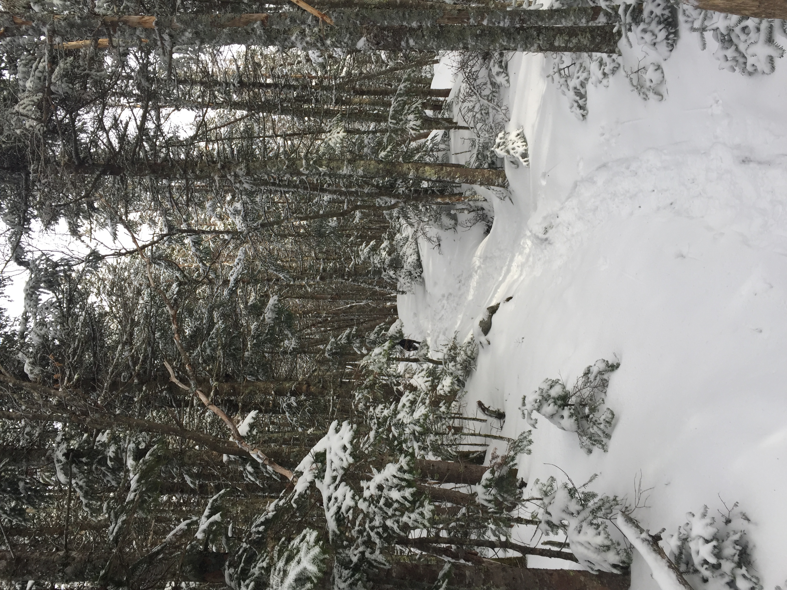
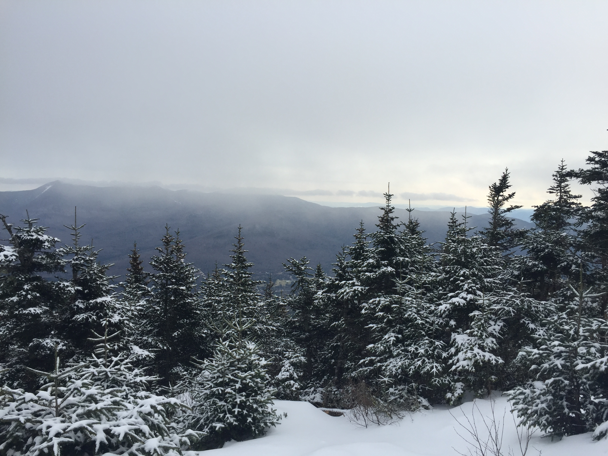
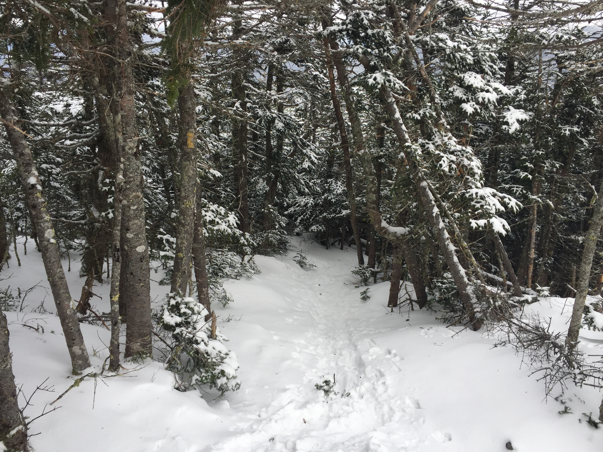
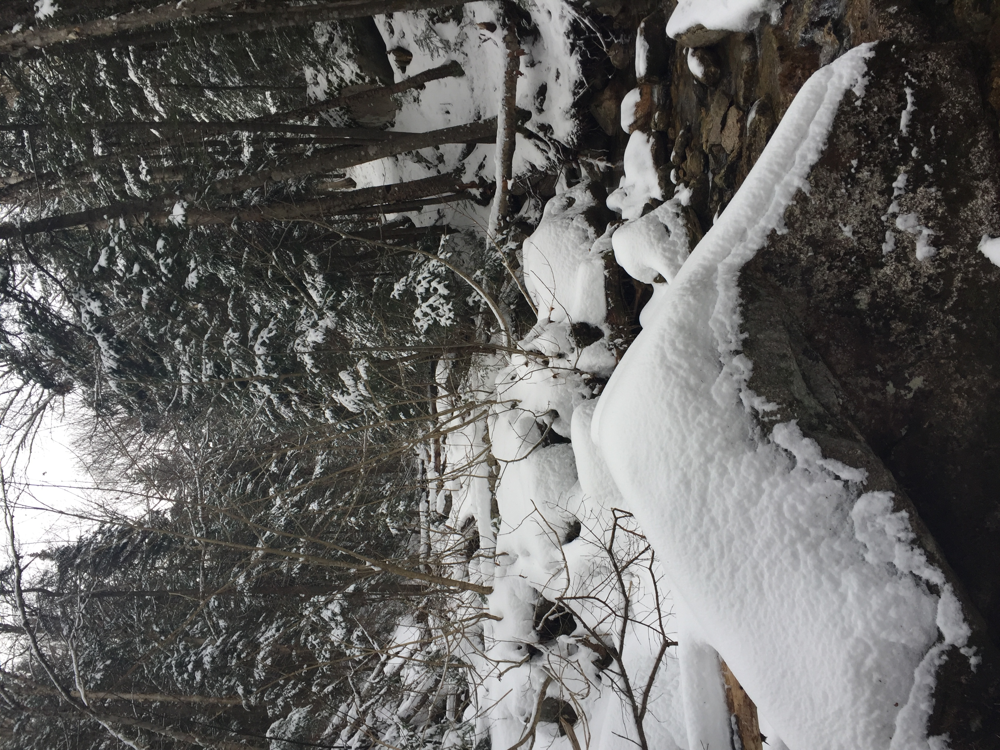
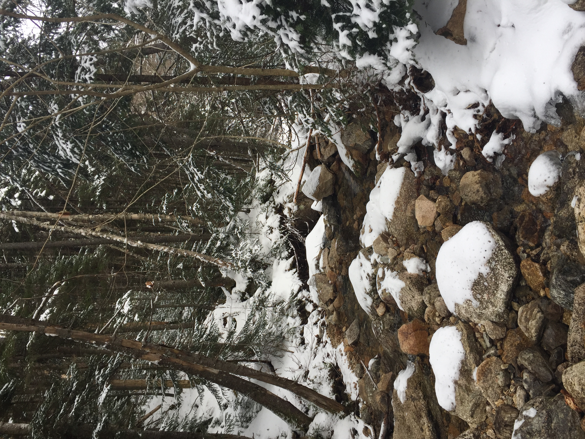

Distance
Distance Elevation
Elevation Observed Wildlife
Observed WildlifeThis was one of the easier 4000 footers I've done. I don't remember much of this hike three years after having done it. Seek out other resources for more info on this hike.




